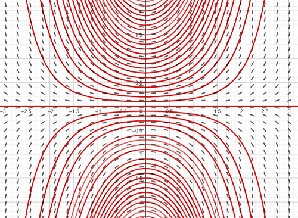

Como prometido, vamos agora a aprender a resolver uma EDO! Ebaaaa
No ebook de Introdução às EDO resolvemos equações diferenciais do tipo \(y'=2x\) calculando sua primitiva \(y(x)=\int\,2x\,dx=x^2+C.\) Lembra? Isso porque a derivada somente dependia da variável \(x\) e podíamos calcular uma primitiva.
Em geral, o método seria:
Se \(y'=f(x)\), então \(y(x)=\int\,f(x)\,dx=F(x)+C\), onde \(F(x)\) é uma primitiva de \(f(x).\)
Agora... Também vimos que a expressão geral de uma EDO de primeira ordem é \[y'=f(x,y).\] Ou seja, do lado direito da igualdade pode aparecer a variável independente \(x\) e também a função desconhecida \(y.\) Por exemplo \(y'=xy\).
O que podemos fazer nesse caso? Bom, dependendo da cara da função \(f(x,y)\), resolveremos a EDO com um método ou outro. As vezes também não dará para resolver algebricamente... E então? Relaxa!! Neste ebook aprenderemos alguns métodos de resolução de EDO de primeira ordem, nem todos, e todas as EDO poderão ser resolvidas pelos métodos propostos.
Vamos ver agora um caso simples do método de separação de variáveis. Esse método se caracteriza porque poderemos "separar" as variáveis da EDO. Isto é, poderemos levar todinho o que depende de \(y\) para o lado esquerdo e todinho o que depende de \(x\) para o lado direito.
Como funciona o método?
Vamos resolver a EDO \[\dfrac{dy}{dx}=xy\] passo a passo, explicando o processo com calma, para você entender certinho a receita do bolo.
Primeiro, levaremos o que estiver dependendo de \(y\) para o lado esquerdo da igualdade e o que estiver dependendo de \(x\) para o lado direito da igualdade:
\[\frac{1}{y}\,dy=x\,dx\]
Agora integramos nos dois lados. Cada lado em relação à variável que indica seu respectivo diferencial, \(dx\) ou \(dy\):
\[\int\,\frac{1}{y}\,dy=\int\,x\,dx\]
Detalhe! Os \(dx\) e \(dy\) sempre devem estar multiplicando! Alguma vez viu uma integral do tipo \(\int\,x\,\frac{1}{dx}\)? Não, né? Pois... aqui também não! Lembre disso :-)
Agora falta isolar o \(y\) para dar a expressão da função desconhecida. Para isso, aplicaremos a exponencial em ambos os lados da equação para eliminar o logaritmo:
\[e^{\ln{|y|}}=e^{\frac{x^2}{2}+c_3}\]
Donde, usando a propriedade \(e^{a+b}=e^a\cdot e^b\): \[∣y∣ = e^{\frac{x^2}{2}}\cdot e^{c_3}\]
Tirando o módulo, \[y=\pm c_4e^{\frac{x^2}{2}},\] com \(c_4=e^{c_3}\) uma constante positiva.
Portanto, a solução geral da EDO \(\dfrac{dy}{dx}=xy\) é:
\[y=Ce^{\frac{x^2}{2}}, \; x\in \mathbb{R},\] com \(C\) uma constante que pode ser tanto positiva como negativa.
O campo de direções da EDO é apesentado na figura a seguir. As curvas vermelhas representam as curvas integrais:

Campo de direções da EDO \(y'=xy\)
Sacou? Vamos dar agora o método geral.
Nem sempre isso poderá ser feito, ok? Por isso veremos mais do que um método :-)
\(e^{\ln(x)}=x, \;\) para \(\,x>0\), e \(\ln(e^x)=x,\) para todo \(x.\)
Isso porque a função \(\ln(x)\) é a inversa da função \(e^x\) e vice-versa
MÉTODO DE SEPARAÇÃO DE VARIÁVEIS
Vamos explicar o método de uma maneira mais geral. Imagine que temos uma equação diferencial de primeira ordem como esta:
\[\dfrac{dy}{dx}=g(x)h(y).\]
Aqui, a derivada da função desconhecida \(y\) em relação à variável independente \(x\) é igual a um produto de duas funções, uma que depende somente de \(x\), \(g(x)\), e outra que depende somente de \(y\), \(h(y)\). É como se podermos "separar" as partes que dependem de \(x\) das partes que dependem de \(y\), certo? Isso, por fortuna (acredite!), facilita a integração e nos ajuda a encontrar a solução.
Observe que, no exemplo anterior, \(\dfrac{dy}{dx}=xy\), tínhamos que \(g(x)=x\) e \(h(y)=y\).
Método de Separação de Variáveis: Se a EDO é da forma \[\dfrac{dy}{dx}=g(x)h(y),\] então fazemos \[\int \dfrac{1}{h(y)}=\int g(x)dx\] e a solução geral da EDO é do tipo \(H(y)=G(x)+C,\) onde \(H(y)\) é uma primitiva de \(\dfrac{1}{h(y)}\) e \(G(x)\) é uma primitiva de \(g(x)\).
Resumo: O método de separação de variáveis é uma técnica poderosa para resolver EDOs de primeira ordem quando podemos separar \(x\) e \(y\). Os passos são:
1. Reorganizar a equação para separar as variáveis. 2. Integrar ambos os lados. 3. Isolar \(y\). 4. Usar a condição inicial, se disponível, para encontrar a solução particular.
A continuação propomos alguns exercícios para você treinar. Força!!